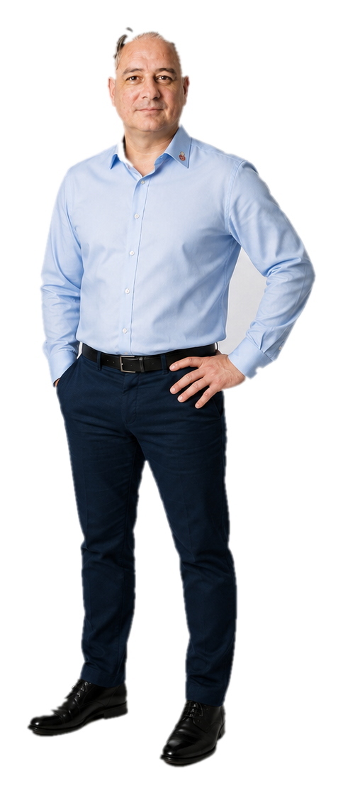
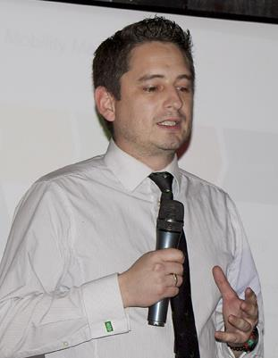
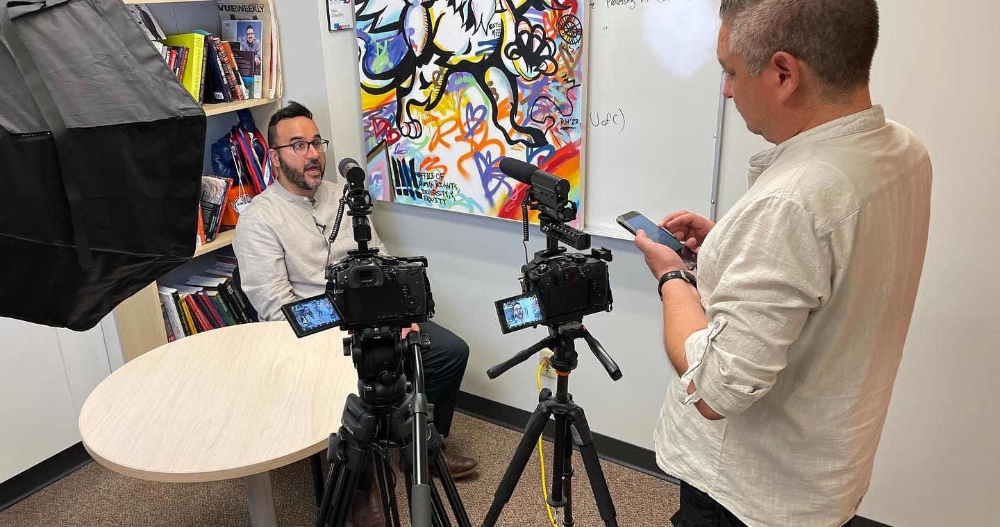

.jpg)
AI & Emerging Technology
Turning complex technology into commercial strategy, executive understanding, and adoption.
AIMLIoT/M2M

Ricardo Casanova / AI GTM / Executive adoption
Based between Bangkok and Edmonton, Ricardo helps leaders understand, explain, and adopt emerging technology in complex commercial and public-sector environments.



Cognitive Casanova
Expertise
Turning complex technology into commercial strategy, executive understanding, and adoption.
.jpg)
Navigating complex organizations, regulated environments, and multi-stakeholder decisions.
Making technical change clear enough for boards, buyers, partners, and public audiences.
Experience
AI, big data, ML, IoT/M2M, and enterprise technology work with large organizations and government-facing environments.
Commercial communication, stakeholder alignment, and buyer-ready strategy for complex technology decisions.
Based between Bangkok, APAC, and Edmonton, Canada.
Author of The Eloquence Protocol and active voice on AI adoption, leadership, and trust.
Queen Elizabeth II Platinum Jubilee Medal and federal commemorative pin for community advancement in technology and public service.
AI will be confident, uplifting, but misleading. Winners survive it, adapt, and build systems people can trust.
Operating thesis / AI adoption
Speaking & Writing
Strategic accounts, executive adoption, partnerships, and AI value translation.
Customer transformation and sales-solution leadership without pretending to be a hands-on engineer.
Regulated environments and multi-stakeholder modernization where trust and clarity decide the outcome.
Speaking, thought leadership, AMAs, podcasts, and boardroom-ready narrative.
Contact